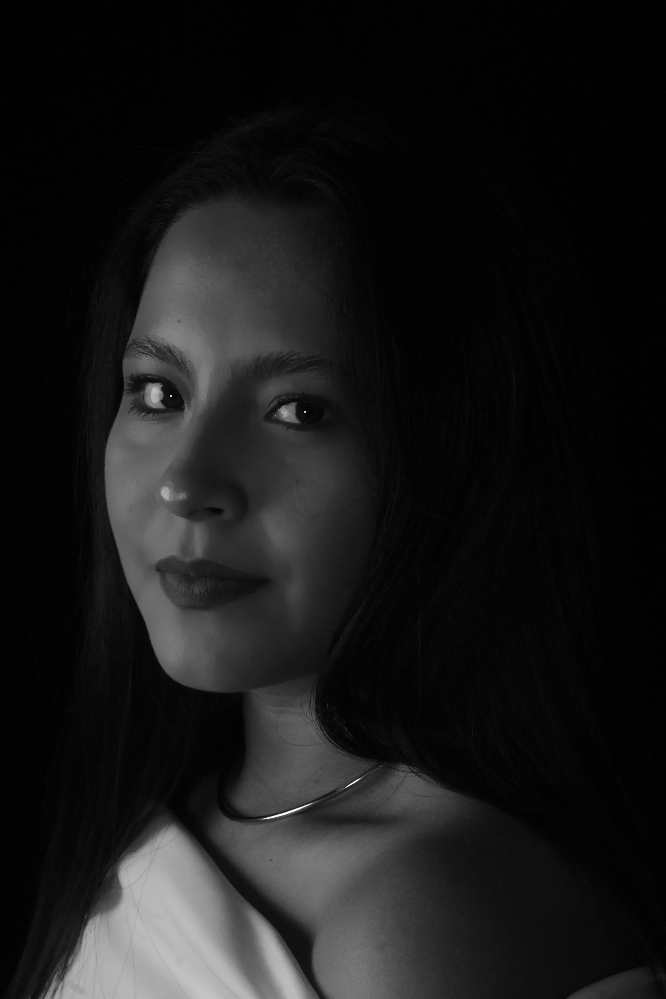

El poder de la luz y la sombra: La intimidad del retrato
El retrato fotográfico va mucho más allá de un simple registro visual; es un ejercicio de conexión y observación donde la luz actúa como el pincel principal para esculpir los rasgos y la expresión del sujeto.
Al trabajar con esquemas de iluminación de alto contraste y fondos profundos, como en esta toma, se busca despojar a la imagen de distracciones innecesarias. De este modo, las sombras suaves y la dirección precisa de la luz modelan los volúmenes del rostro, dotando a la mirada de una fuerza narrativa y una atmósfera íntima inconfundible.
La clave de este estilo radica en saber equilibrar las altas luces con la penumbra, guiando de forma natural la atención del espectador hacia la emoción y los detalles esenciales de la persona frente a la cámara.
← Regresar al inicio